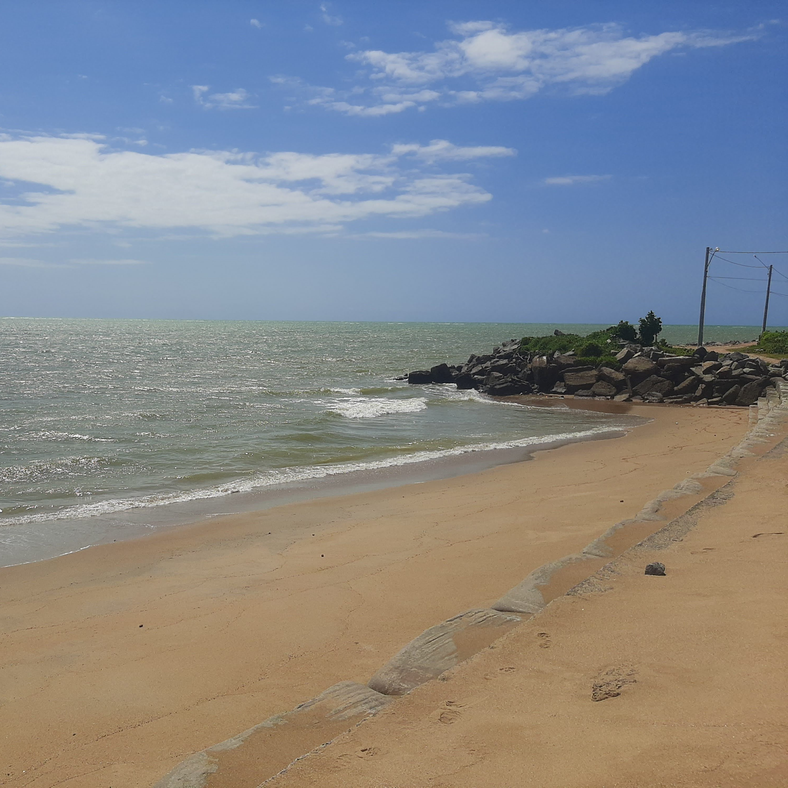
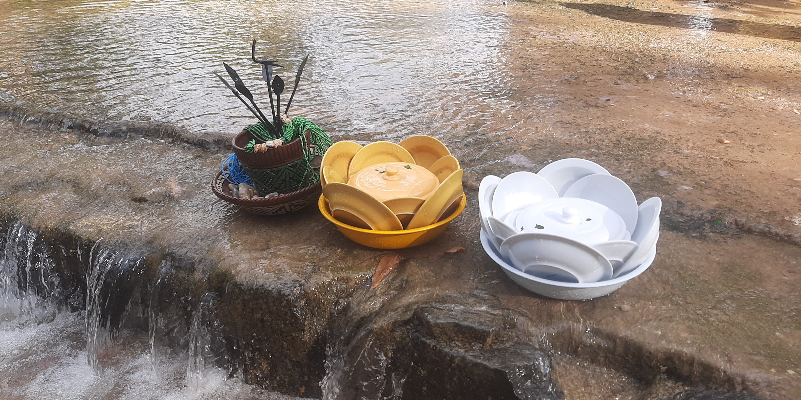
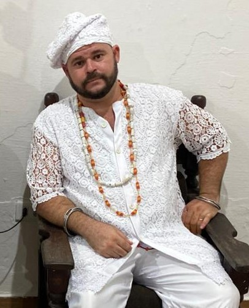
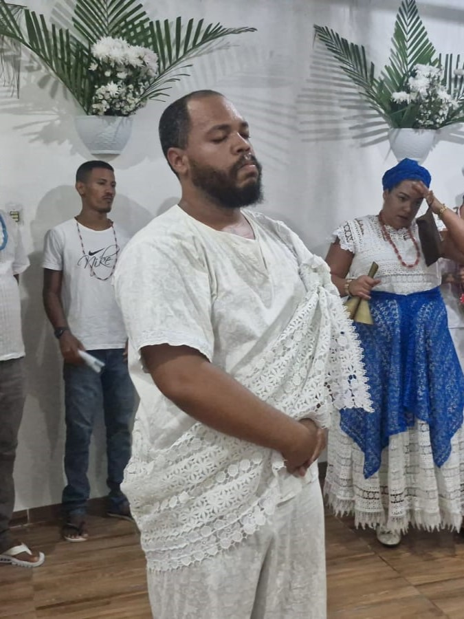
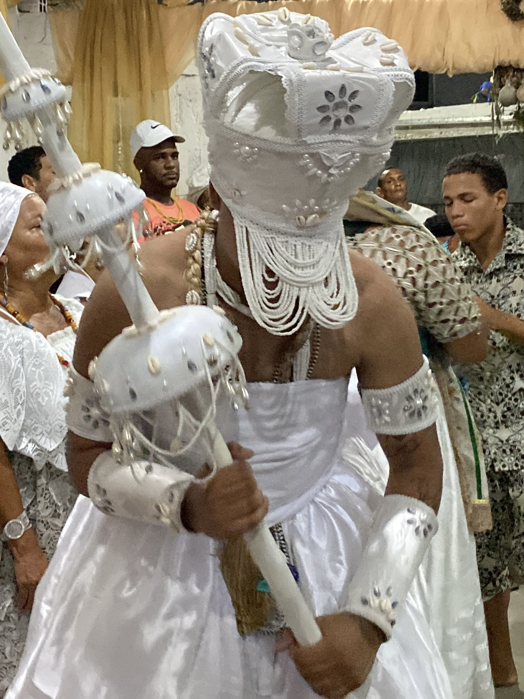

.jpg)
.jpg)
.jpg)
O Ilê Axé Oxaguiã Obá Elegibô é um espaço sagrado de fé, tradição e resistência, dedicado à preservação e vivência das raízes ancestrais do Candomblé. Firmado na nação Jeje, nossa casa carrega a força dos Voduns e a sabedoria transmitida de geração em geração, mantendo vivos os ensinamentos, rituais e fundamentos que sustentam nossa espiritualidade.
Nossa trajetória é marcada pelo compromisso com o respeito às divindades, à natureza e à comunidade. Cada toque, cada canto e cada obrigação realizada dentro do terreiro representa a continuidade de uma história construída com devoção, disciplina e amor pela tradição.
Sob a liderança do Babalorixá Felipe, o Ilê se fortalece como um ponto de acolhimento, orientação e desenvolvimento espiritual. Nosso terreiro é um lugar onde o sagrado se manifesta diariamente, guiando aqueles que buscam caminho, equilíbrio e conexão com o divino.
Mais do que um espaço religioso, somos uma família espiritual, unidos pela fé, pelo respeito às nossas origens e pela missão de manter viva a chama do Axé.
Nossos Descendentes e Nação



Felipe Xavier é o Doté do Ilê Axé Oxaguian Obá Elegibô, localizado em Águas Compridas, em Olinda. Como babalorixá de Oxaguian, conduz a casa com firmeza, sabedoria e profundo compromisso com os fundamentos da tradição, sendo responsável por orientar, cuidar e manter viva a espiritualidade dentro do terreiro.
Sua trajetória é marcada pela dedicação ao sagrado, pelo respeito aos orixás e pelo acolhimento de todos que buscam orientação espiritual. À frente do Ilê Axé Oxaguian Obá Elegibô, Felipe Xavier exerce sua missão com responsabilidade e fé, fortalecendo a corrente espiritual e guiando seus filhos de santo no caminho do axé, da disciplina e da evolução.



Atendimentos espirituais realizados pelo Babalorixá Felipe Xavier, com orientação através do jogo de búzios. Descubra caminhos, receba direcionamentos e encontre equilíbrio com a força dos Orixás. Atendimento individual, com sigilo e fundamento.
Saiba maisAtendimentos realizados por Clau Aguiar, filho da casa, através do Tarô e do Baralho Cigano. Receba orientações claras sobre amor, trabalho e caminhos da vida, com leitura intuitiva, respeito e sigilo.
Saiba maisTrabalhos espirituais realizados pelo pai de santo da casa, incluindo banhos, adoçamentos, bori, ebós de prosperidade, limpezas e abertura de caminhos. Fortaleça seu axé, equilibre sua vida e alcance seus objetivos com fundamento, respeito e sigilo.
Saiba maisServiço de defumação realizado pelo Pejigan da casa, Miguel, diretamente em sua residência. Ideal para remover más energias, purificar o ambiente e trazer leveza e equilíbrio ao seu espaço. Atendimento com respeito, cuidado e fundamento.
Saiba maisServiços de corte realizados por Alice Medeiros, cabeleireira e filha da casa, em parceria com o Studio Oriri. Atendimento profissional para todos os estilos, disponível para atendimento em domicílio, unindo cuidado, estética e bem-estar.
Saiba mais